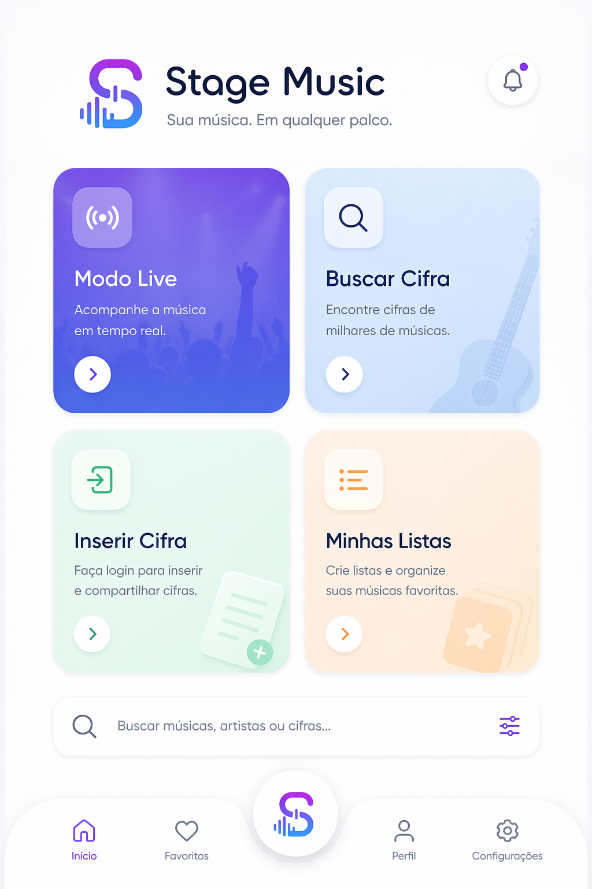

Fase 2 • experiência AAA • base confiável
Uma home realmente útil para palco, ensaio, ministração e organização musical
O Stage Music agora já apresenta uma página inicial mais estratégica: entrada rápida, listas recentes, atalhos de palco, repertórios e visão clara do que vem nas próximas fases.
home com navegação mais prática e mais próxima de produto real
setores da interface separados para palco, busca, criação e listas
pré-login funcional e editor liberado nesta build
Experiência
Hub inicial mais funcional
Buildv0.7.0
StatusFase 2 — Redesign AAA e Design System
Próxima metaSalvamento local do editor
Modo Live
Acesso rápido ao modo leitura para palco com foco em clareza e fluidez.
CatálogoBuscar cifra
Encontre repertórios, cifras oficiais, rascunhos e bases salvas no futuro.
CriaçãoInserir cifra
Fluxo local ou online já libera o editor e prepara a sincronização futura.
SetlistsMinhas listas
Repertórios de culto, show, ministração e ensaio organizados por contexto.
Esses chips já simulam a futura experiência de busca rápida diretamente da home.

Recentes
Ir para busca
Cifras e repertórios mais acessados
Minhas listas
Abrir listas
Modelos de repertório prontos
Culto da noite
5 músicas • abertura, ministração e encerramento
LouvorPalcoOrdem pronta
Show acústico
8 músicas • fluxo intimista e leitura rápida
AcústicoEventos
Fluxo do músico
Como a experiência vai funcionar
Entrar online ou local
Escolha usar o dispositivo rapidamente ou sincronizar sua conta.
Criar ou buscar cifra
Base local e online vão trabalhar juntas para acelerar o uso.
Montar listas
Organize repertório por culto, show, ensaio ou apresentação.
Abrir modo live
Leitura final limpa, prática e pensada para execução ao vivo.
Roadmap próximo
O que entra na próxima build
Login real com Firebase
Pré-página passa a ter fluxo funcional com sessão do usuário.
Persistência inicial
Base pronta para salvar preferências e preparar os dados locais.
Transição para editor
O acesso de Inserir Cifra passa a apontar para um fluxo mais real de criação.
Home mais madura, com entradas rápidas, repertórios de exemplo e visão do produto.
Login funcional com Firebase Auth e primeira lógica real de sessão do usuário.
Editor local com base de cifra, preview e início do salvamento híbrido.